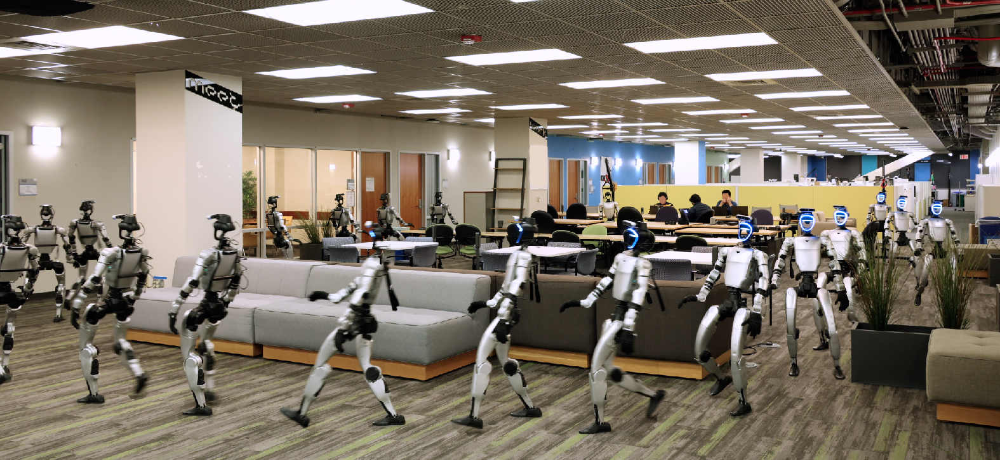
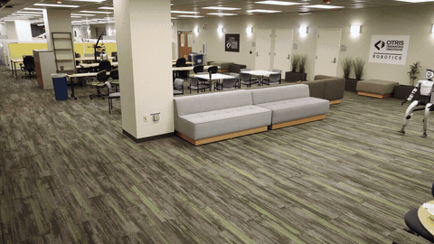

TANGO💃🏻: Humanoid Navigation in Cluttered Environments with a Whole-Body Vision-Language-Action Model
CoRL 2026 Spotlight (Top 3.4%)
RSS@WBCM Oral
TANGO is a whole-body vision-language-action framework for language-conditioned humanoid traversal in cluttered indoor environments.